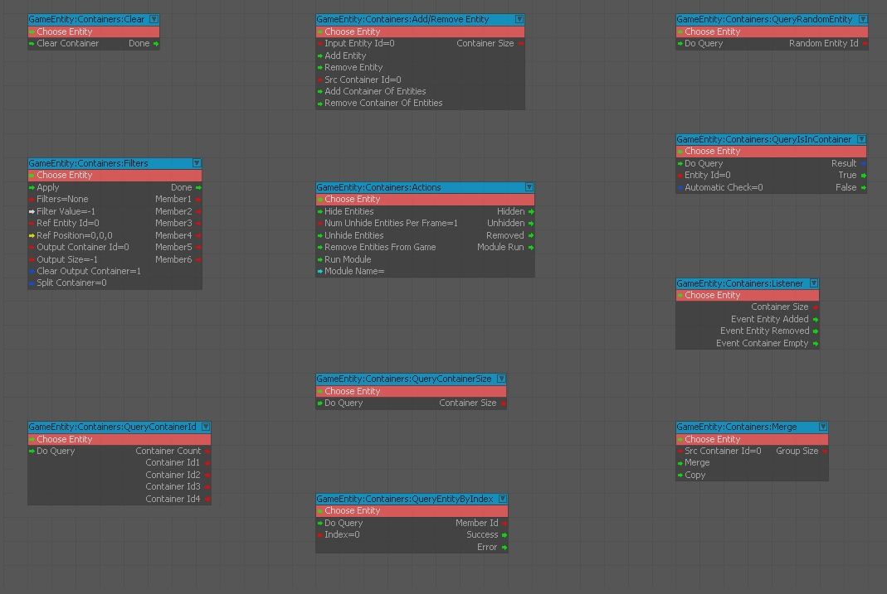
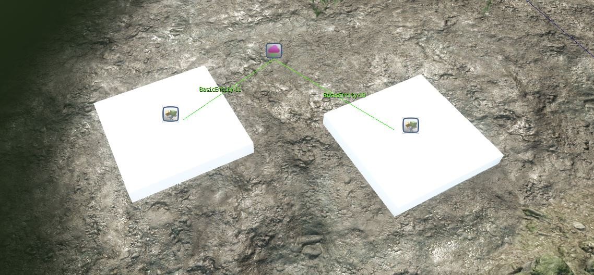
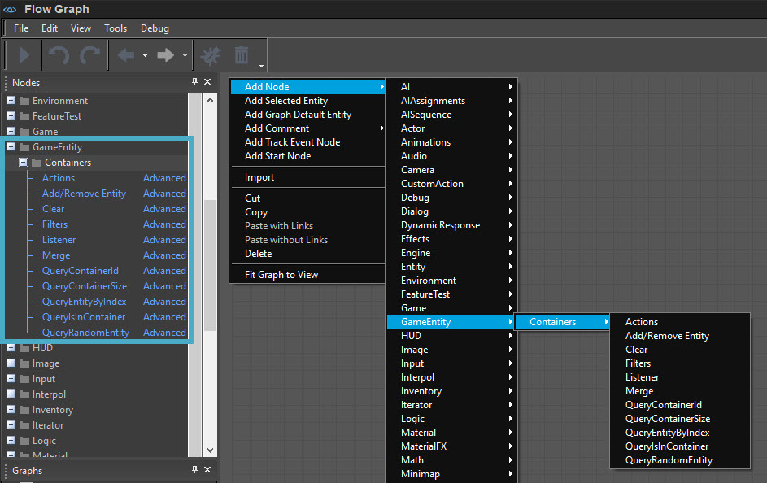

Entity Containers are a system to manage and operate on sets of entities within the FlowGraph logic.

Overview
An Entity Container is a way to define a set/list/group of entities that can then be dynamically changed and used with FlowGraph logic.
Common useful operations that can be applied to the containers are to add/remove entities, query if entities are in a container, listen, iterate over the container entities and apply an action to them, such as hiding or unhiding.
Setting up an Entity Container
An Entity Container is itself an entity. To configure one:
- Add an entity of type Entity Container to a level
- Set its initial contents by linking entities in the Properties tab.

Using Entity Containers
The entity containers are meant to be used via FlowGraph with the nodes in the category GameEntity:Containers. A container can be identified by its Entity ID.

The available nodes allow:
- editing the container.
- operations between different containers.
- querying if an entity is in the container.
- querying and ordering the container entities by proximity to another entity.
- listening for events of the entities in the container.
- applying an action to all entities of a container by iterating with a combination of "QueryContainerSize" and "QueryEntityByIndex" or with the "Actions" node by running a Flow Graph Module on each entity.